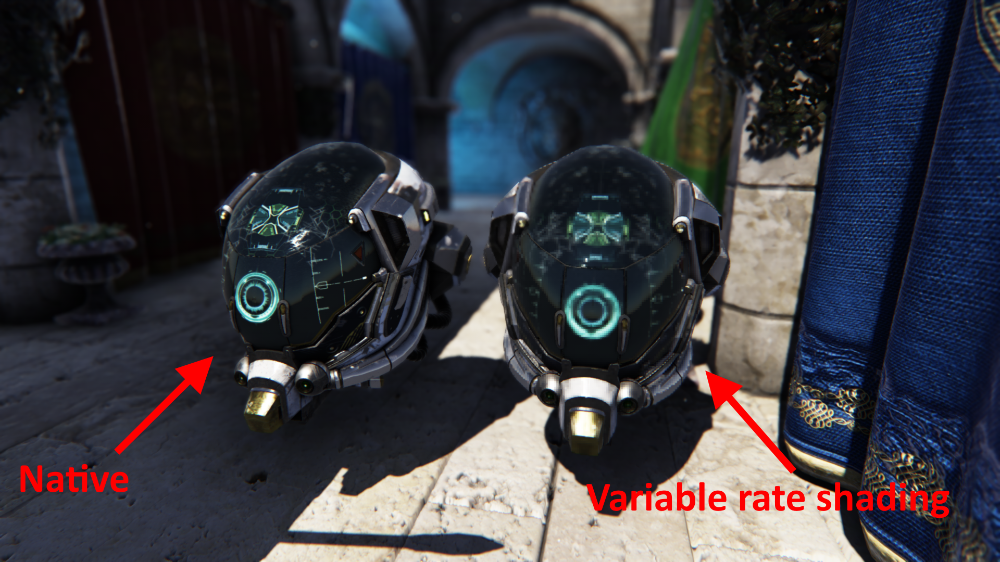
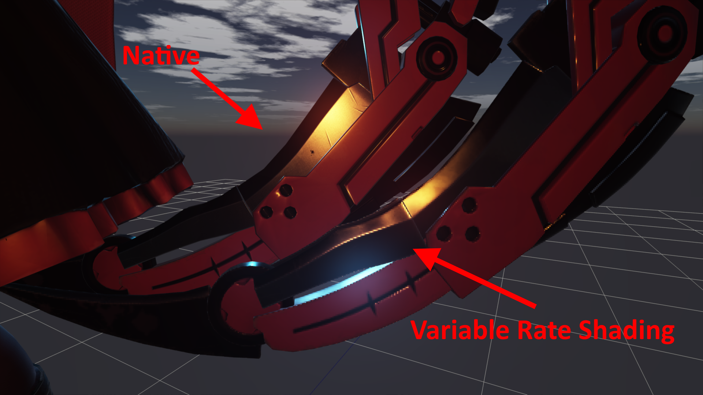
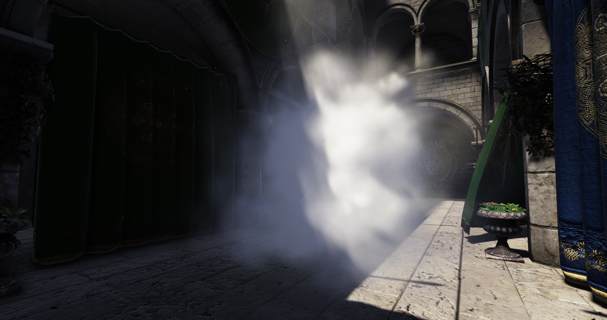
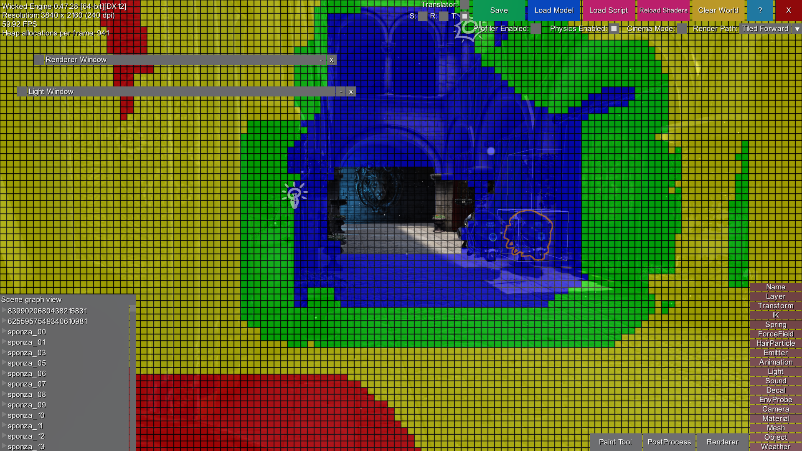
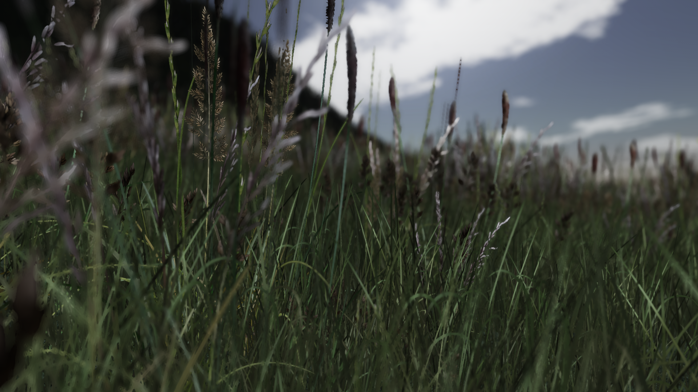
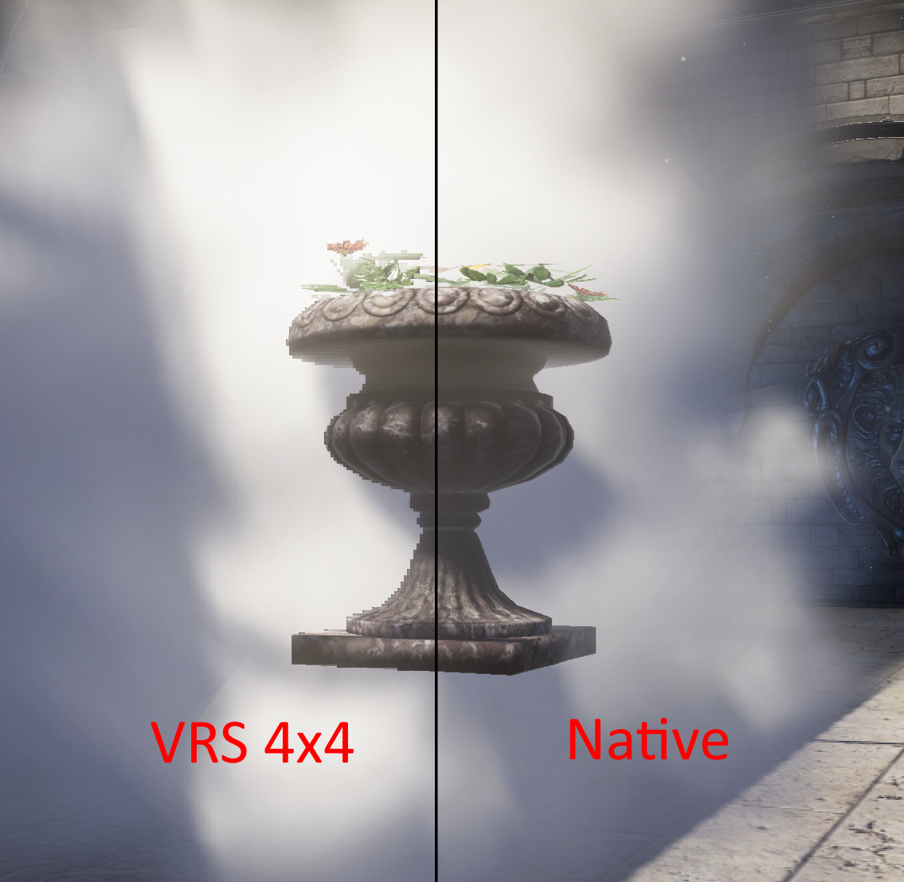
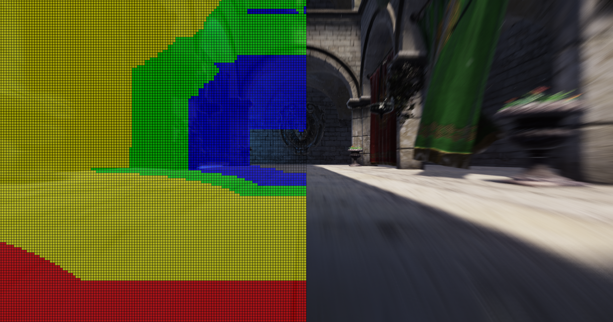
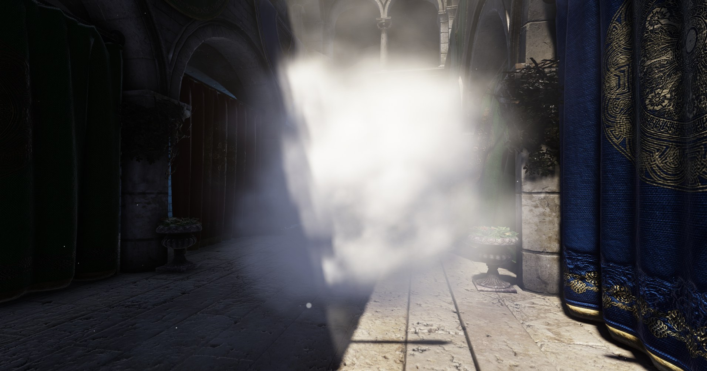

Variable Rate Shading: first impressions
Variable Rate Shading (VRS) is a new DX12 feature introduced recently, that can be used to control shading rate. To be more precise, it is used to reduce shading rate, as opposed to the Multi Sampling Anti Aliasing (MSAA) technique which is used to increase it.
When using MSAA, every pixel gets allocated multiple samples in the render target, but unless multiple triangles touch it, it will be only shaded once. VRS on the other hand doesn’t allocate multiple samples per pixel, instead it can broadcast one shaded pixel to nearby pixels, and only shade a group of pixels once. The shading rate means how big is the group of pixels that can get shaded as one.
Basics
DirectX 12 lets the developer specify the shading rate as a block of pixels, it can be 1×1 (default, most detailed), 1×2, 2×1, 2×2 (least detailed) in the basic hardware implementation. Optionally, hardware can also support 2×4, 4×2, 4×4 pixel group at an additional capability level. The granularity of the shading rate selection can be controlled per draw call by the basic Tier1 VRS hardware. Controlling by draw call is already a huge improvement over MSAA, because that means shading rate is not consistent across the screen. To set the shading rate, it couldn’t be easier:
commandlist5->RSSetShadingRate(D3D12_SHADING_RATE_2X2, nullptr); // later about second parameterThat’s it, unlike MSAA, we don’t need to do any resolve passes, it just works as is.
The Tier2 VRS feature level lets the developer specify the shading rate granularity even per triangle by using the SV_ShadingRate HLSL semantic for a uint shader input parameter. The SV_ShadingRate can be written as output from the vertex shader, domain shader, geometry shader and mesh shader. In all of the cases, the shading rate will be set per primitive, not per vertex, even though vertex and domain shaders only support the per vertex execution model. The triangle will receive the shading rate of the provoking vertex, which is the first vertex of the three vertices that make up the triangle. The pixel shader can also read the shading rate as an input parameter, which could be helpful in visualizing the rate.
The Tier2 VRS implementation also supports controlling the shading rate by a screen aligned texture. The screen aligned texture is a R8_UINT formatted texture, which contains the shading rate information per tile. A tile can be 8×8, 16×16 or 32×32 pixel block, it can be queried from DX12 as part of the D3D12_FEATURE_DATA_D3D12_OPTIONS6 structure:
D3D12_FEATURE_DATA_D3D12_OPTIONS6 features_6;
device->CheckFeatureSupport(D3D12_FEATURE_D3D12_OPTIONS6, &features_6, sizeof(features_6));
features_6.VariableShadingRateTier; // shading rate image and per primitive selection only on tier2
features_6.ShadingRateImageTileSize; // tile size will be 8, 16 or 32
features_6.AdditionalShadingRatesSupported; // Whether 2x4, 4x2 and 4x4 rate is supportedWhich means, that the shading rate image resolution will be:
width = (screen_width + tileSize - 1) / tileSize;
height = (screen_height + tileSize - 1) / tileSize;To bind the shading rate image, a call exists:
commandlist5->RSSetShadingRateImage(texture);The shading rate image will need to be written from a compute shader through an Unordered Access View (RWTexture2D<uint>). Before binding it with the RSSetShadingRateImage command, it needs to be in the D3D12_RESOURCE_STATE_SHADING_RATE_SOURCE.
So there are multiple ways to set the shading rate: RSSetShadingRate, SV_ShadingRate, RSSetShadingRateImage, but which one will be in effect? This can be specified through the second parameter of the RSSetShadingRate() call with an array of combiners. The combiners can specify which shading rate selector will be chosen. For example, one that specified the least detailed shading rate (D3D12_SHADING_RATE_COMBINER_MAX), or the most detailed (D3D12_SHADING_RATE_COMBINER_MIN), or by other logic. Right now, I just want to apply the coarsest shading rate that was selected at all times, so I call this at the beginning of every command list:
D3D12_SHADING_RATE_COMBINER combiners[] =
{
D3D12_SHADING_RATE_COMBINER_MAX,
D3D12_SHADING_RATE_COMBINER_MAX,
};
GetDirectCommandList(cmd)->RSSetShadingRate(D3D12_SHADING_RATE_1X1, combiners);Next, I’d like to show some of the potential effects these can play into.
- Materials
For example, if there is an expensive material or not very important, lower the shading rate of it. It can easily be a per material setting that can be set at authoring time.


- Particle systems
When drawing off screen particles into a low resolution render target, we can save performance easily, but it will be difficult to compose back the particles and retain smooth edges with the geometry in the depth buffer. Instead, we can choose to render with full resolution, and reduce shading rate. We can also keep using hardware depth testing this way and improve performance.

- Objects in the distance
Objects in distance can easily reduce shading rate by draw call or per primitive rate selection. - Objects behind motion blur or depth of field
Fast moving or out of focus objects can be shaded more coarsely and the shading rate image features can be used for this. In my first integration, I am using a compute shader that dispatches one thread group for each tile and each thread in the group reads a pixel’s velocity until all pixels in the tile are read. Each pixel’s velocity is mapped to a shading rate and then the most detailed one is determined via atomic operation inside the tile. The shader internally must write values that are taken from D3D12_SHADING_RATE struct, so in order to keep an API independent implementations, these values are not hard coded, but provided in a constant buffer. [My classification shader source code here, but it will probably change in the future]

- Alpha testing
For vegetations, we often want to do alpha testing, and often the depth prepass is used with alpha testing. In that case, we don’t have to alpha test in the second pass when we render colors and use more expensive pixel shaders, because the depth buffer is computed and we can rely on depth testing against previous results. Then the idea is that we will be able to reduce shading rate for the alpha tested vegetation only in the second pass, while retaining high resolution alpha testing quality from the depth prepass.

Problems:
- One of my observations is that when zoomed in to a reduced shading rate object on the screen, we may see some blockiness, as if it used point/nearest neighbor sampling method, but after some thinking it makes sense, because only a single pixel value is broadcasted to to all neighbors, and no filtering or resolving takes place.
- Also, mip level selection will be different in coarse shaded regions, because derivatives are larger when using larger pixel blocks. This is because samples are farther away from each other. For me personally, it doesn’t matter because the result is blocky anyways. This should be applied at places where the users will notice these less likely anyway. I am not sure how I would handle it with the Tier2 features, but the per draw call rate selection could be balanced with setting a lower mip LOD bias for the samplers in the draw call when there is coarse shading selected.
- Although off screen particles can retain more correct composition with the depth buffer with VRS, if we are rendering soft particles (blending computed in the shader from linear depth buffer and particle plane difference), the soft regions where the depth test is not happening will produce some blockiness:

- Classification
There are many more aspects to consider when classifying tiles for the image based shading rate selection. Right now, the simple thing to try was select increasingly coarser shading rates with increasing minimum title velocity. The other things to consider would be that I can think of and heard of: depth of field focus, depth discontinuity, visible surface detail. All these are most likely fed from the previous frame and reprojected with the current camera matrices. Tweaking and trying all of these will have to wait for me and probably depending on the kind of game/experience one is making. Strategy games will likely not care about motion blur, unlike racing games.
Performance
Enabling the VRS gets me a significant performance boost, especially when applying to large geometries, such as the floor in Sponza (that also uses an expensive parallax occlusion mapping shader for displacement mapping), or the large billboard particles that are overlapping and using an expensive lighting shader. Some performance results using RTX 2060, 4k resolution:
- Classification:
0.18ms – from velocity buffer only - Forward rendering:
5.6ms – stationary camera (full res shading)
1.8ms – moving camera (variable rate shading)
4ms – only floor (with parallax occlusion mapping) set to constant 4×4 shading rate - Motion blur:
0.75ms – stationary camera (plus curtain moving on screen)
3.6ms – moving camera

right: motion blur amount
Motion blur increases cost when blur amount increases, but VRS reduces cost at the same time
- Billboard particle system (large particles close to camera)
4ms – unlit, full resolution shading
3ms – unlit, 4×4 shading rate
24.7ms – shaded, full resolution shading
3.4ms – shaded, 4×4 shading rate

Thanks for reading, you can read about VRS in more detail in the DX12 specs.
As Philip Hammer called out on Twitter, the Nvidia VRS extension is also available in Vulkan, OpenGL and DX11:
- https://www.khronos.org/registry/vulkan/specs/1.2-extensions/man/html/VK_NV_shading_rate_image.html
- https://developer.nvidia.com/vrworks/graphics/variablerateshading
UPDATE:
Vulkan now has the cross vendor extension for variable rate shading, called the KHR_fragment_shading_rate. This is somewhat different from the DX12 specs, as the shading rate image needs to be a render pass attachment instead of a separate binding. This is different from the former VK_NV_shading_rate which was closer to DX12 in that regard. The new one follows a more Vulkan-like approach. For the example of implementation, you can look at Wicked Engine’s Vulkan interface.